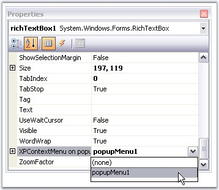
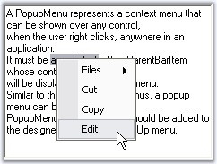

In the previous topic, we saw how to add and fill a popup menu with menu items. This section will guide you on how to associate a popup menu to a control like RichTextBox (in this example), through designer without a single piece of code.
Drag and Drop a PopupMenusManager control onto the form. Also add a RichTextBox control. When PopupMenusManager class is dragged onto the design surface, it will provide an extended property, XPContextMenu on popupMenusManager1 for all the controls in the form, letting the users to easily associate a popup menu with a control.

Figure 816: Associating PopupMenu with RichTextBox Control
 Note: A single PopupMenu can be
associated with multiple controls.
Note: A single PopupMenu can be
associated with multiple controls.
|
[C#]
// Create and initialize a ParentBarItem. this.editBarItem = new Syncfusion.Windows.Forms.Tools.ParentBarItem(); this.editBarItem.Text = "&Edit"; this.editBarItem.Items.AddRange(new BarItem[] { this.cutItem, this.copyItem});
// Associate the ParentBarItem with the PopupMenu. this.popupMenu1 = new Syncfusion.Windows.Forms.Tools.PopupMenu(); this.popupMenu1.ParentBarItem = this.editBarItem;
// Then associate it with a RichTextBox. this.popupMenusManager = new PopupMenusManager(); this.popupMenusManager.SetXPContextMenu(this.richTextBox1, this.popupMenu1); |
|
[VB.NET]
' Create and initialize a ParentBarItem. Me.editBarItem = New Syncfusion.Windows.Forms.Tools.ParentBarItem() Me.editMenu.Text = "&Edit" Me.editMenu.Items.AddRange(New BarItem() {Me.cutItem, Me.copyItem})
' Associate the ParentBarItem with the PopupMenu. Me.popupMenu1 = New Syncfusion.Windows.Forms.Tools.PopupMenu() Me.popupMenu1.ParentBarItem = Me.editBarItem
' Then associate it with a RichTextBox. Me.popupMenusManager = New PopupMenusManager() Me.popupMenusManager.SetXPContextMenu(Me.richTextBox1, Me.popupMenu1) |

Figure 817: A PopupMenu Item added Programmatically
Note: We can even show the popup menu
without implementing the PopupMenusManager class by calling PopupMenu.Show
method. Click here for more details.
See Also
· Adding and filling a popup menu